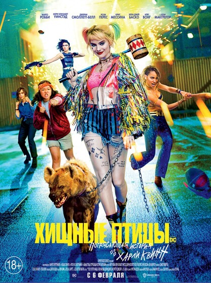

Хищные птицы

«Хищные птицы» от Кэти Ян и Кристины Ходсон — экранизация комиков про супергероинь и злодеек киновселенной DC. Харли Квинн (Марго Робби), Охотница (Мэри Элизабет Уинстэд), Чёрная Канарейка (Джерни Смоллетт), Кассандра Кейн (Элла Джей Баско) и Рене Монтойя (Рози Перез) проивостоят криминальному миру. Неожиданная команда объединяется, чтобы спасти одну из своих из злодейских лап Чёрной маски (Юэн Макгрегор) и его подручного Виктора Заса (Крис Мессина).
Вики